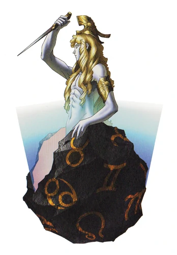

Mithras

Mithras (Level 19) is the boss of Sector Bootes, and
a big step up from Morax; without the right prep, he
can and will wreck you. With the right prep however,
he;s not too bad.
Tips to Prepare:
-
The main character's equipment is as always of
utmost importance. Get the materials to make the
Alabaser gun: its Wind Shot hits Mithras' Wind
weakness. More importantly however, take the time to
grind for DF Bootite II, and get UMA skins using Enemy Search to get the
Green Vest. The Ice resistance will be VERY important.
-
Get demons that can first resist/null Ice, and then after
can hit Wind. A healer may be nice; but also get a few buff or debuff
users, because buffs can be a big lifesaver. You can fuse Jack Frost;
but not for the reasons you may think; he absorbs Ice, meaning
he's essentially safe against Mithras' worst attack. Also meat shield.
-
It would also be very helpful to stock on Revival Beads; this boss has
an instakill attack. Also get some Dis-Strain; the boss can inflict it and
MP restoring items are VERY rare at this time.
-
Most importantly; have at least 1 backup demon for if a demon dies
and you can't take the 2 turns to revive and resummon them. Otherwise,
that 1 turn may go very bad.
The Fight
Mithras himself resists Gun, and nulls Ice, Light and Dark. He has
no real pattern, so just keep prepared for any of the following attacks:
-
Rampage: 2-4 light hits to random targets
of your party. Decently strong, but just heal if need be.
-
Waking Dream: A party-wide physical attack that
can cause Strain; it's basically Poison but for your MP. This is where
the Dis-Strains come in handy; given that you want as much MP for Wind
and buffs/debuffs to finish this fight smoothly.
-
Light Of Order: Yes, a Chaos-aligned demon
has an attack with "Order" in it's name, don't ask me why. One of
the first troublesome attacks that Mithras has; it's an Almighty instakill
that targets the demon with the lowest Magic stat. This can be bad, especially
if your main damage dealer gets killed by this. Fortunately it never
targets the player, so have a backup demon ready, or revive and resummon;
the attack is 100% accurate, so you just have to deal with it.
-
Mabufudyne: Yep, Mithras has a top tier
elemental spell at this point in the game. Fortunately, he doesn't
have the magic stat to go with it, clocking at 21. So if you bring
demons and wear equipment that at least resist Ice, it's basically
harmless. If not, this attack will hit HARD.
As far as I know, Mithras has no real pattern. That being said if you're prepared like above,
the only attack to really worry about is Light of Order. Debuff him to soften him up,
keep hitting him with Wind, and this mad scientist will have a 100% chance of death.